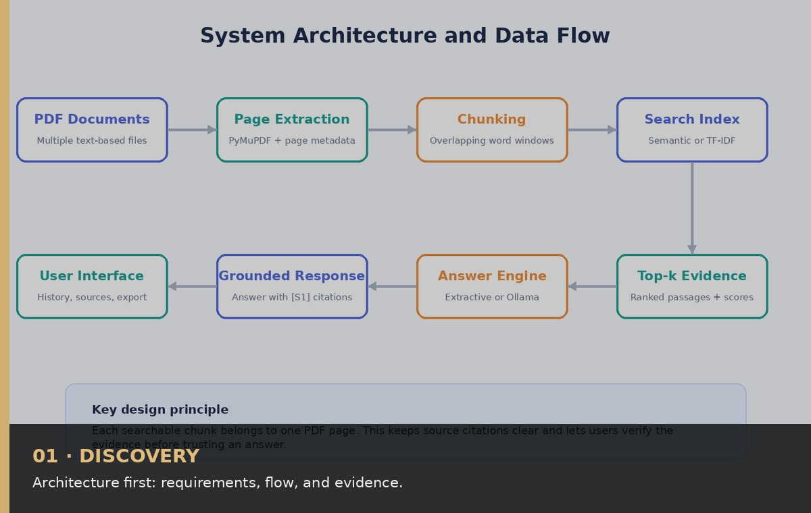
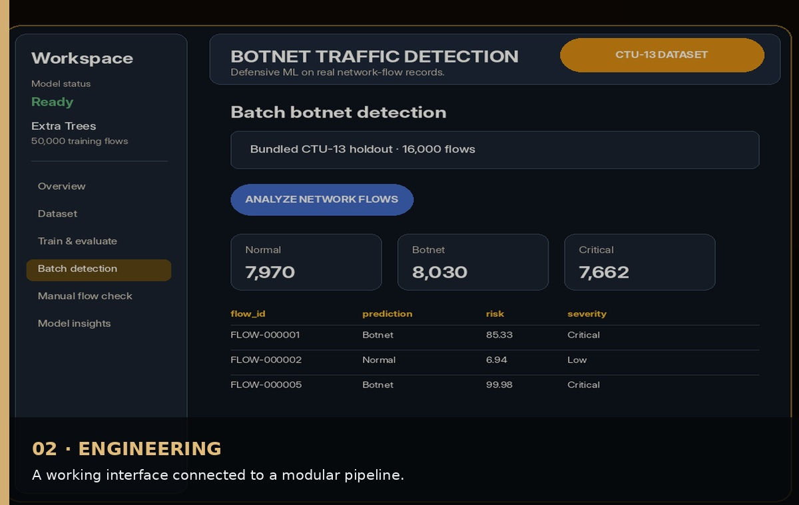
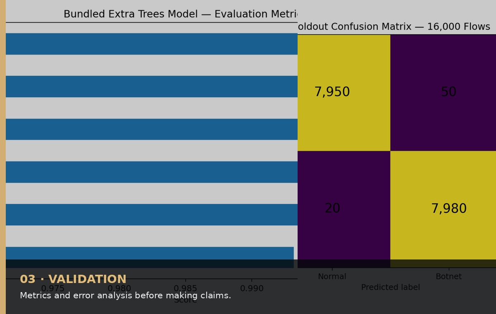

01 · DISCOVERY
Frame the problem
Translate a broad idea into users, constraints, measurable behavior, risks, and acceptance criteria before choosing technology.
SELECTED WORK
HOW I WORK
Every stage leaves an artifact: a problem definition, an architecture, a tested result, and documentation that another person can reproduce.

Translate a broad idea into users, constraints, measurable behavior, risks, and acceptance criteria before choosing technology.

Separate responsibilities, design fallback paths, and select tools according to the device, data, and deployment environment.

Test the critical path, expose evidence, explain limitations, and package the work so it is easy to reproduce and review.
JOURNEY
A compact visual timeline that automatically changes every six seconds.
ABOUT
CONTACT